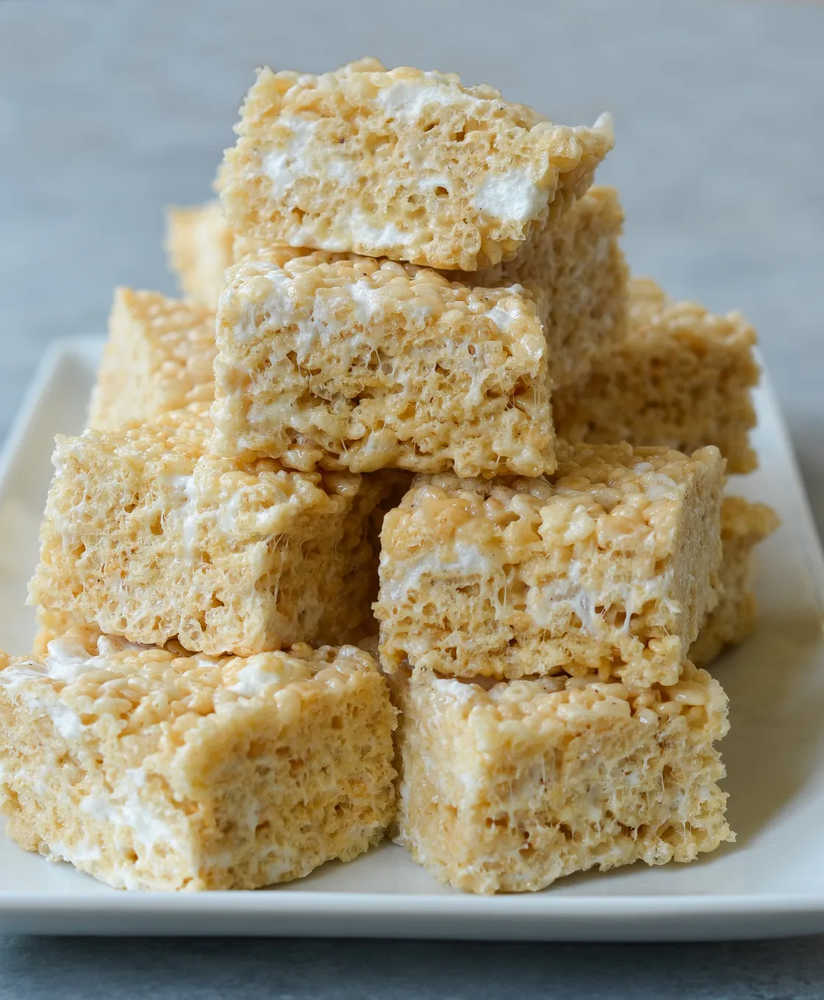

Rice Krispies Recipe
The classic Rice Krispies square.
SourceIngredients
- 50 ml or 1/4 cup margarine or butter
- 1.25 L or 5 cups miniature or 40 regular (250 g pkg) marshmallows
- 2 ml or 1/2 tsp vanilla extract (optional)
- 1.5 L or 6 cups Rice Krispies* cereal

Instructions
- In large saucepan over low heat, melt margarine. Add marshmallows; stir until melted and well blended. Remove from heat.
- Stir in vanilla. Add cereal, stirring until coated.
- Using lightly buttered spatula, press into a 3 1/2 L or 13" x 9" buttered pan.
- Cool. Cut into bars.